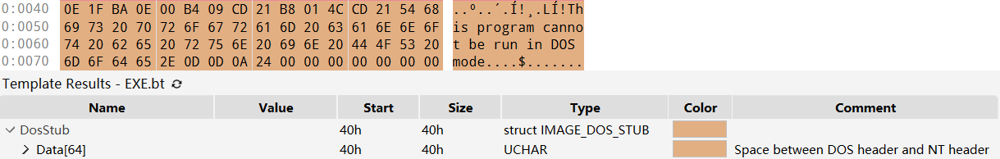
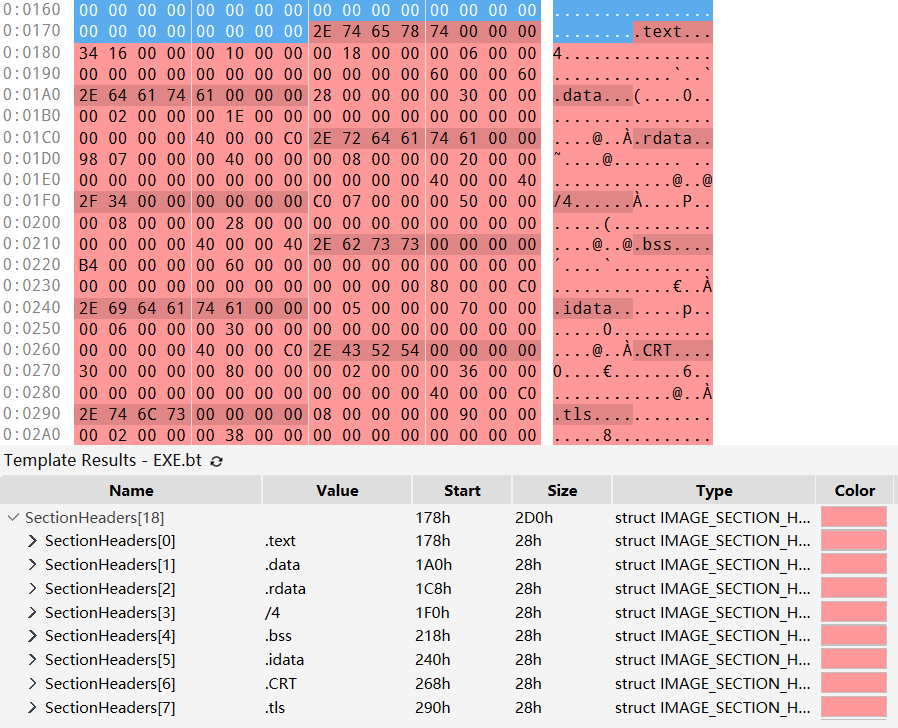
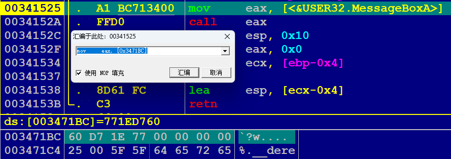
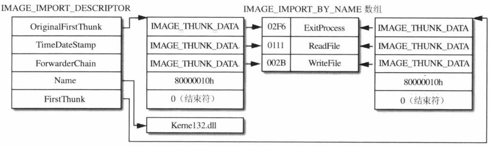
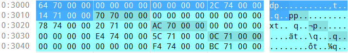
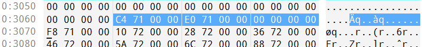
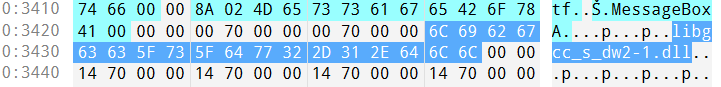
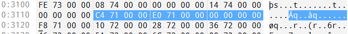
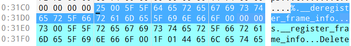
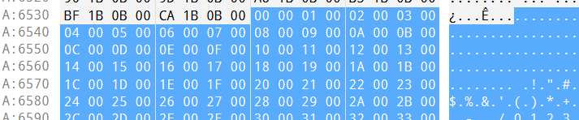

PE 文件
PE 文件格式 PE 文件 （Portable Executable ）是 Windows 操作系统下使用的可执行文件格式。其中，32 位可执行文件称 PE32，64 位的可执行文件称 PE+ 或 PE32+。
种类 主拓展名 可执行文件 EXE, SCR 库系列 DLL, OCX, CPL, DRV 驱动程序系列 SYS, VXD 对象文件系列 OBJ
严格来讲，除了 OBJ 文件外所有文件都是可执行的，尽管它被视为 PE 文件
一个 32-bit 的 PE 文件结构大致如下：
接下来选用普通的 Hello World PE 文件进行演示
DOS 头和 DOS 存根是微软为了充分考虑 PE 文件对于 DOS 文件的兼容性而设置的，其中 DOS 头 的结构体如下：
typedef struct _IMAGE_DOS_HEADER
{
WORD e_magic ; // 4D5A ("MZ")
WORD e_cblp ;
WORD e_cp ;
WORD e_crlc ;
WORD e_cparhdr ;
WORD e_minalloc ;
WORD e_maxalloc ;
WORD e_ss ;
WORD e_sp ;
WORD e_csum ;
WORD e_ip ;
WORD e_cs ;
WORD e_lfarlc ;
WORD e_ovno ;
WORD e_res [ 4 ];
WORD e_oemid ;
WORD e_oeminfo ;
WORD e_res2 [ 10 ];
LONG e_lfanew ; // NT 头相对于文件起始处的偏移
} IMAGE_DOS_HEADER , * PIMAGE_DOS_HEADER ;
结构体 IMAGE_DOS_HEADER 大小为 40B，其中需要注意两个成员：
e_magic: DOS 签名，固定为 4D5A，即 ASCII 值 MZe_lfanew: NT 头 IMAGE_NT_HEADER 相对于文件起始处的偏移
注意是小段序，因此此处 e_lfanew 的值为 00000080
DOS Stub 位于 DOS Header 下方，是一个可选项，且大小不固定。DOS 存根由代码与数据混合而成，其中 40-4D 区域是一串 16 位的汇编指令。
当程序运行在 32-bit 环境时，OS 不会运行该命令；当在 DOS 环境（16-bit）尝试运行 PE 文件时，则该段指令被执行，作用是输出 "This program cannot be run in DOS mode" 并退出。

利用该特性可以书写在 MS-DOS 和 Windows 环境中都能运行的程序
NT 头 的结构体如下：
typedef struct _IMAGE_NT_HEADERS {
DWORD Signature ; /* +0000h PE 标识 */
IMAGE_FILE_HEADER FileHeader ; /* +0004h PE 标准头 */
IMAGE_OPTIONAL_HEADER32 OptionalHeader ; /* +0018h PE 可选头 */
} IMAGE_NT_HEADERS32 , * PIMAGE_NT_HEADERS32 ;
Signature 是 PE 文件签名，固定为 50450000，对应 ASCII 值 PE\0\0
第二个成员 FileHeader 也被称为 COFF 头（标准通用文件格式头），表示该文件的大致属性，其结构为：
typedef struct _IMAGE_FILE_HEADER {
WORD Machine ; /* +0004h 目标机器类型 */
WORD NumberOfSections ; /* +0006h PE 中节的数量 */
DWORD TimeDateStamp ; /* +0008h 时间戳 */
DWORD PointerToSymbolTable ; /* +000ch 指向符号表的指针 */
DWORD NumberOfSymbols ; /* +0010h 符号表中符号数目 */
WORD SizeOfOptionalHeader ; /* +0012h 可选头的大小 */
WORD Characteristics ; /* +0014h 文件属性标志 */
} IMAGE_FILE_HEADER , * PIMAGE_FILE_HEADER ;
Machine: CPU 的机器码，各类具体值可见 PE 格式 - Win32 apps 其中 Intel 386 或更高版本的处理器和兼容的处理器的机器码为 0x014c NumberOfSections: 节区数量 TimeDataStamp: 低 32 位表示从 1970 年 1 月 1 日 00:00 到文件创建时经过的秒数PointerToSymbolTable: 符号表的文件偏移 NumberOfSymbols: 符号表中的符号数量SizeOfOptionalHeader: 可选头 OptionalHeader 的大小 在 32-bit 机器上默认是 0x00E0，在 64-bit 机器上默认是 0x00F0 Characteristics: 文件属性，通过 bit OR 方式组合，一些常见的文件属性标志如下： // 文件属性标志
#define IMAGE_FILE_RELOCS_STRIPPED 0x0001 // 表示文件不包含重定位信息，只能在原定的基址加载。如果原定基址不可用，加载器会报出错误
#define IMAGE_FILE_EXECUTABLE_IMAGE 0x0002 // 表示文件可执行，如果该位未设置，意味着存在链接器错误
#define IMAGE_FILE_LINE_NUMS_STRIPPED 0x0004 // 不存在行信息
#define IMAGE_FILE_LOCAL_SYMS_STRIPPED 0x0008 // 不存在符号信息
#define IMAGE_FILE_AGGRESSIVE_WS_TRIM 0x0010 // 已废弃
#define IMAGE_FILE_LARGE_ADDRESS_AWARE 0x0020 // 应用可处理大于 2GB 的地址
#define IMAGE_FILE_BYTES_REVERSED_LO 0x0080 // 小尾存储。已废弃
#define IMAGE_FILE_32BIT_MACHINE 0x0100 // 基于 32-bit 体系结构
#define IMAGE_FILE_DEBUG_STRIPPED 0x0200 // 不存在调试信息
#define IMAGE_FILE_REMOVABLE_RUN_FROM_SWAP 0x0400 // 如果映像文件在可移动介质上，完全加载并复制到内存交换文件中
#define IMAGE_FILE_NET_RUN_FROM_SWAP 0x0800 // 如果映像文件在网络介质上，完全加载并复制到内存交换文件中
#define IMAGE_FILE_SYSTEM 0x1000 // 映像文件是系统文件
#define IMAGE_FILE_DLL 0x2000 // 映像文件是动态链接库文件
#define IMAGE_FILE_UP_SYSTEM_ONLY 0x4000 // 文件只能在单处理器机器上运行
#define IMAGE_FILE_BYTES_REVERSED_HI 0x8000 // 大尾存储（已废弃）
其中需要记住 0002 (exe) 和 2000 (dll)
可选头在 PE32 和 PE32+ 不同，我们仅介绍 IMAGE_OPTIONAL_HEADER32 的结构：
typedef struct _IMAGE_OPTIONAL_HEADER {
WORD Magic ; /* +0018h 魔数 */
BYTE MajorLinkerVersion ; /* +001ah 链接器主要版本号 */
BYTE MinorLinkerVersion ; /* +001bh 链接器次要版本号 */
DWORD SizeOfCode ; /* +001ch 所有含代码的节的总大小 */
DWORD SizeOfInitializedData ; /* +0020h 所有含已初始化数据的节的总大小 */
DWORD SizeOfUninitializedData ; /* +0024h 所有含未初始化数据的节的总大小 */
DWORD AddressOfEntryPoint ; /* +0028h 程序入口点RVA */
DWORD BaseOfCode ; /* +002ch 代码节起始RVA */
DWORD BaseOfData ; /* +0030h 数据节起始RVA */
DWORD ImageBase ; /* +0034h 映像文件加载时的首选地址 */
DWORD SectionAlignment ; /* +0038h 内存中节对齐粒度*/
DWORD FileAlignment ; /* +003ch 文件中节对齐粒度 */
WORD MajorOperatingSystemVersion ; /* +0040h 操作系统主要版本号 */
WORD MinorOperatingSystemVersion ; /* +0042h 操作系统次要版本号 */
WORD MajorImageVersion ; /* +0044h 映像文件主要版本号 */
WORD MinorImageVersion ; /* +0046h 映像文件次要版本号 */
WORD MajorSubsystemVersion ; /* +0048h 子系统主要版本号 */
WORD MinorSubsystemVersion ; /* +004ah 子系统次要版本号 */
DWORD Win32VersionValue ; /* +004ch 保留。置0 */
DWORD SizeOfImage ; /* +0050h 内存中映像文件的大小 */
DWORD SizeOfHeaders ; /* +0054h 所有头+节表大小 */
DWORD CheckSum ; /* +0058h 映像文件校验和 */
WORD Subsystem ; /* +005ch 运行映像所需子系统 */
WORD DllCharacteristics ; /* +005eh 映像文件的DLL属性 */
DWORD SizeOfStackReserve ; /* +0060h 初始化时的保留的栈大小 */
DWORD SizeOfStackCommit ; /* +0064h 初始化时实际提交的栈大小 */
DWORD SizeOfHeapReserve ; /* +0068h 初始化时保留的堆大小 */
DWORD SizeOfHeapCommit ; /* +006ch 初始化时实际提交的堆大小 */
DWORD LoaderFlags ; /* +0070h 已废弃 */
DWORD NumberOfRvaAndSizes ; /* +0074h 数据目录结构的数量 */
IMAGE_DATA_DIRECTORY DataDirectory [ IMAGE_NUMBEROF_DIRECTORY_ENTRIES ]; /* +0078h 指向数据目录中第一个 IMAGE_DATA_DIRECTORY 结构体的指针 */
} IMAGE_OPTIONAL_HEADER32 , * PIMAGE_OPTIONAL_HEADER32 ;
我们关注以下几个关键成员：
Magic: 魔数 为 IMAGE_OPTIONAL_HEADER32 时为 10B 为 IMAGE_OPTIONAL_HEADER64 时为 20B AddressOfEntryPoint: 入口点函数相对于映像文件加载基址的偏移（RVA） 对于可执行文件，这是启动地址 对于设备驱动，这是初始化函数地址 ImageBase: 映像文件优先 被载入的虚拟地址，必须为 64KB 的整数倍 应用程序的默认值为 0x00400000 DLL 的默认值为 0x10000000 因此多个 DLL 被载入时，PE Loader 一定会调整载入地址 SectionAlignment: 内存中的节对齐粒度 默认值与系统的页大小相等 该值必须不小于 FileAlignment FileAlignment: 映像文件中原始数据的对齐粒度 范围在 \(2^9\) 到 \(2^{16}\) 之间，默认为 \(2^9\) 如果 SectionAlignment 值小于系统页大小，则 FileAlignment 必须与该值设置相同 SizeOfImage: 指定在虚拟地址空间占据空间的大小SizeOfHeader: 整个 PE 头的大小，并且按照 FileAlignment 对齐 那么第一节区就位于偏移 SizeOfHeader 处 Subsystem: 运行映像文件所需的子系统，最常用的值有： 1: Driver 文件，即系统驱动（如 ntfs.sys）2: GUI 文件，即窗口应用程序（如 notepad.exe）3: CUI 文件，即控制台应用程序（如 cmd.exe） NumberOfRvaAndSizes: 数据目录结构的个数，默认为 0x00000010，即 16 个DataDirectory[]: 数据目录，结构体 IMAGE_DATA_DIRECTORY 如下： typedef struct _IMAGE_DATA_DIRECTORY {
DWORD VirtualAddress ; /* 数据目录的 RVA */
DWORD Size ; /* 数据目录的大小 */
} IMAGE_DATA_DIRECTORY , * PIMAGE_DATA_DIRECTORY ;
其中默认的 16 个数据目录含义为：
// 数据目录
DataDirectory [ 0 ] = EXPORT Directory // 导入表 RVA 和大小
DataDirectory [ 1 ] = IMPORT Directory // 导入表 RVA 和大小
DataDirectory [ 2 ] = RESOURCE Directory // 资源表 RVA 和大小
DataDirectory [ 3 ] = EXCEPTION Directory // 异常表 RVA 和大小
DataDirectory [ 4 ] = CERTIFICATE Directory // 证书表 FOA 和大小
DataDirectory [ 5 ] = BASE RELOCATION Directory // 基址重定位表 RVA 和大小
DataDirectory [ 6 ] = DEBUG Directory // 调试信息 RVA 和大小
DataDirectory [ 7 ] = ARCH DATA Directory // 指定架构信息 RVA 和大小
DataDirectory [ 8 ] = GLOBALPTR Directory // 全局指针寄存器 RVA
DataDirectory [ 9 ] = TLS Directory // 线程私有存储表 RVA 和大小
DataDirectory [ 10 ] = LOAD CONFIG Directory // 加载配置表 RVA 和大小
DataDirectory [ 11 ] = BOUND IMPORT Directory // 绑定导入表 RVA 和大小
DataDirectory [ 12 ] = IAT Directory // 导入地址表 RVA 和大小
DataDirectory [ 13 ] = DELAY IMPORT Directory // 延迟导入描述符 RVA 和大小
DataDirectory [ 14 ] = CLR Directory // CLR数据 RVA 和大小
DataDirectory [ 15 ] = Reserverd // 保留
这里需要关注 EXPORT, IMPORT, RESOURCE, TLS，它们是 PE 头中非常重要的部分
节区头中定义了各节区的属性。节区头的结构体大小均为 40B，其定义如下：
typedef struct _IMAGE_SECTION_HEADER {
BYTE Name [ IMAGE_SIZEOF_SHORT_NAME ]; /* 节区名 */
union {
DWORD PhysicalAddress ; /* 物理地址 */
DWORD VirtualSize ; /* 虚拟内存中节区大小 */
} Misc ;
DWORD VirtualAddress ; /* 虚拟内存中节区 RVA */
DWORD SizeOfRawData ; /* 磁盘文件中节区大小 */
DWORD PointerToRawData ; /* 磁盘文件中节区 FOA */
DWORD PointerToRelocations ; /* 指向重定位表的指针 */
DWORD PointerToLinenumbers ; /* 指向行号表的指针 */
WORD NumberOfRelocations ; /* 重定位入口数量 */
WORD NumberOfLinenumbers ; /* 行号数量 */
DWORD Characteristics ; /* 节区属性 */
} IMAGE_SECTION_HEADER , * PIMAGE_SECTION_HEADER ;
我们需要关注以下几个重要成员：
VirtualSize: 内存中节区的大小VirtualAddress: 内存中节区的起始地址（RVA）SizeOfRawData: 磁盘文件中节区大小PointerToRawData: 磁盘中节区起始位置Characteristics: 节区属性，通过 bit OR 方式组合，一些常见的节区属性标志如下： // 节区属性
#define IMAGE_SCN_CNT_CODE 0x00000020 // 节区包含代码
#define IMAGE_SCN_CNT_INITIALIZED_DATA 0x00000040 // 节区包含已初始化数据
#define IMAGE_SCN_CNT_UNINITIALIZED_DATA 0x00000080 // 节区包含未初始化数据
#define IMAGE_SCN_LNK_NRELOC_OVFL 0x01000000 // 节区包含扩展的重定位项
#define IMAGE_SCN_MEM_DISCARDABLE 0x02000000 // 节区可根据需要丢弃，如 .reloc 在进程开始后被丢弃
#define IMAGE_SCN_MEM_NOT_CACHED 0x04000000 // 节区不会被缓存
#define IMAGE_SCN_MEM_NOT_PAGED 0x08000000 // 节区不可分页
#define IMAGE_SCN_MEM_SHARED 0x10000000 // 节区可共享给不同进程
#define IMAGE_SCN_MEM_EXECUTE 0x20000000 // 节区可作为代码执行
#define IMAGE_SCN_MEM_READ 0x40000000 // 节区可读
#define IMAGE_SCN_MEM_WRITE 0x80000000 // 节区可写

IAT Import Address Table 用于记录程序正在使用库中的哪些函数。为了学习 IAT 的相关知识，我们需要先了解 DLL 的概念。
DLL 是一种动态库，加载 DLL 的方式有显式链接 和隐式链接 两种，分别对应着“使用时才加载”和“一开始就全部加载”。IAT 的机制与后者相关。
例如对于 hello.exe 中，调用 MessageBoxA API 的汇编语句，我们可以看到它采用间接调用地址 0x3471BC 处的值 0x771ED760 来实现。其中地址 0x3471BC 位于 IAT 内存区域，而 0x771ED760 即加载到进程中的 MessageBoxA 函数地址（位于 USER32 库中）。

由此，我们可以固定使用 0x3471BC 作为该函数的调用入口，而在 [0x3471BC] 处放置该函数实际被载入地址，以此来适应不同版本的 DLL 以及 DLL 重定位。
EXE 文件通常直接被加载到自身 ImageBase 处，但 DLL 不能保证
IAT 使用 IMAGE_IMPORT_DESCRIPTOR 作为结构体：
typedef struct _IMAGE_IMPORT_DESCRIPTOR
{
union {
DWORD Characteristics ;
DWORD OriginalFirstThunk ; // INT 的地址 (RVA)
// INT: Import Name Table
} DUMMYUNIONNAME ;
DWORD TimeDateStamp ;
DWORD ForwarderChain ; // 第一个被转向的API的索引
DWORD Name ; // 库名称的地址 (RVA)
DWORD FirstThunk ; // IAT 的地址 (RVA)
} IMAGE_IMPORT_DESCRIPTOR ;
// INT 和 IAT 的结构体
typedef struct _IMAGE_THUNK_DATA32
{
union {
DWORD ForwarderString ; // 转发字符串的RAV
DWORD Function ; // 被导入函数的地址
DWORD Ordinal ; // 被导入函数的序号
DWORD AddressOfData ; // 指向输入名称表 PIMAGE_IMPORT_BY_NAME
} u1 ;
} IMAGE_THUNK_DATA32 ;
// INT 和 IAT 各项的结构体
typedef struct _IMAGE_IMPORT_BY_NAME
{
WORD Hint ; // 函数序号
CHAR Name [ 1 ]; // 导入函数的名称
} IMAGE_IMPORT_BY_NAME , * PIMAGE_IMPORT_BY_NAME ;
每导入一个库，就会创建一个 IMAGE_IMPORT_DESCRIPTOR 结构体，这些结构体构成了数组，并且最后以一个 NULL 结构体结尾。

实际在被 PE Loader 装载进内存时，IAT 的内容会被修正为函数入口地址：
我们之前学过，NT Header 中的可选头中，DataDirectory[1] 记录了 IAT 的 RVA 和 Size。对于我的 hello.exe，IAT 的 RVA 为 0x7000，Size 为 1280。
根据 Section Header ，我们找到了 7000h 应位于节区 .idata 中，它的 VirtualAddress(RVA) 为 7000h，PointerToRawData 为 3000h，节区大小 VirtualSize 为 500h。因此计算可得 IAT 表在磁盘中的地址(RAW)为：
\[ 7000h-7000h+3000h=3000h \]
我们尝试追踪 3000h 处第一个库的 IMAGE_IMPORT_DESCRIPTOR 结构体：

磁盘偏移 成员 RVA RAW 文件内位置 3000h OriginalFirstTrunk000070643064 3004h TimeDataStamp00000000- 3008h ForwarderChain00000000- 300Ch Name0000742C342C 3010h FirstTrunk000071143114
对于 Name，我们找到其 RAW 位置的库名称为 libgcc_s_dw2-1.dll。
我们的确看到了文件中 INT 和 IAT 各项值均相同。我们进一步跟踪 INT 的第一个表项值 71C4 所对应的 RAW 值 31C4 处，可以发现导入的 API 函数名称为 register_frame_info：

EAT Export Address Table 是库文件让不同的应用程序准确计算其导出函数的起始地址的关键。与 IAT 不同，一个 PE 文件中仅有一个 IMAGE_EXPORT_DESCRIPTOR 结构体，而不是一个数组。
这是因为 PE 文件可以导入多个库，但只能作为一个库导出
IMAGE_EXPORT_DESCRIPTOR 结构体的定义如下：
typedef struct _IMAGE_EXPORT_DIRECTORY
{
DWORD Characteristics ; // 保留,恒为0x00000000
DWORD TimeDateStamp ; // 文件的产生时间戳
WORD MajorVersion ; // 主版本号
WORD MinorVersion ; // 次版本号
DWORD Name ; // 指向文件名的RVA
DWORD Base ; // 导出函数的起始序号
DWORD NumberOfFunctions ; // 导出函数总数
DWORD NumberOfNames ; // 具名导出函数的总数
DWORD AddressOfFunctions ; // 导出函数地址表的RVA
DWORD AddressOfNames ; // 函数名称地址表的RVA
DWORD AddressOfNameOrdinals ; // 函数名序号表的RVA
} IMAGE_EXPORT_DIRECTORY , * PIMAGE_EXPORT_DIRECTORY ;
API GetProcAddress() 用于从库的 EAT 中获取指定 API 地址，其具体的操作原理为：
利用 AddressOfNames 成员转到“函数名称数组” “函数名称数组”中存储着字符串地址，通过比较字符串查找指定的函数名称，此时数组的索引为 name_index 利用 AddressOfNameOrdinals 成员转到“序号数组” 通过 name_index 在“序号数组”中找到相应的 ordinal 值 利用 AddressOfFunctions 成员转到 EAT 通过 ordinal 值获取指定函数的起始地址 GetProcAddress() 即接受函数名，也接受函数序号
pFunc = GetProcAddress("TestFunc");pFunc = GetProcAddress(4); NT Header 中的可选头中，DataDirectory[0] 记录了 EAT 的 RVA 和 Size。对于我本机的 kernel32.dll，EAT 的 RVA 为 0xA3070，Size 为 0xEB68。
查询 Section Header 后，得到 EAT 位于节区 .rdata 中，它的 VirtualAddress 为 86000h，VirtualSize 为 36D1Ah，PointerToRawData 为 86000h。
经过换算，RVA 0xA3070 对应了 RAW 0xA3070，我们在该地址处寻找 IMAGE_EXPORT_DIRECTORY 结构体：
磁盘偏移 成员 值 RAW 0A3070h Characteristics00000000- 0A3074h TimeDataStamp4D2D2813- 0A3078h MajorVersion0000- 0A307Ah MinorVersion0000- 0A307Ch Name000A72600xA7260 0A3080h Base00000001- 0A3084h NumberOfFunctions00000694- 0A3088h NumberOfNames00000694- 0A308Ch AddressOfFunctions000A30980xA3098 0A3090h AddressOfNames000A4AE80xA4AE8 0A3094h AddressOfNameOrdinals000A65380xA6538
首先查看 Name 处的内容，的确是 KERNEL32.dll：
然后查看函数名称数组 AddressOfNames，每 4B 对应了一个函数名称的 RVA，总共 0x694 个函数：
我们以函数 ActivateActCtx 为例，它位于地址 A:72D9 处，即函数名称数组的第三个：
接下来我们查询 AddressOfNameOrdinals 数组，一个 ordinal 是 2B，因此得到函数 ActivateActCtx 的 ordinal 为 0002：

最后查询 AddressOfFunctions，得到 ordinal=2 处的 RVA 为 00037D20：
该 dll 文件的 ImageBase 为 180000000h，因此函数 ActivateActCtx 理论上应位于地址 180037D20h 处。实际运行中，加载器可能会将其重定位到别的基址上，例如如下 00007FF96EB00000，则加上 RVA 偏移后的地址为 00007FF96EB37D20，验证正确：
我使用的是路径 System32 下的 kernel32.dll，要使用 x64dbg 进行调试
如果使用 32-bit 调试器（例如 ollydbg 和 x32dbg），则系统会自动重定向加载 SysWOW64 下的 kernel32.dll，因此会出现与计算不符的情况。
![[re_topic2_21.png]]
运行时压缩 Run Time Packer 针对 PE 文件进行了压缩，在运行时压缩文件运行时在内存中解压缩并执行。运行时压缩文件无需额外的解压程序，其内部就包含了解压所需的程序，其文件大小更小，但是每次运行均需调用解码程序。
另一方面，压缩器还可用于隐藏 PE 文件内的代码及资源
为了保护 PE 文件免受代码逆向分析，在 PE 压缩器的基础上又诞生了 PE 保护器 （Protector）。它不仅对文件进行了运行时压缩，还应用了多种防止代码逆向分析的技术，例如反调试、反模拟、代码混乱、多态代码、垃圾代码、调试器监控等。
经保护器处理后的代码可能比原始文件还大一些，调试起来非常困难

{kind=link}

{kind=link}
{kind=link}
{kind=link}

{kind=link}
{kind=link}
{kind=link}
{kind=link}
{kind=link}


{kind=link}